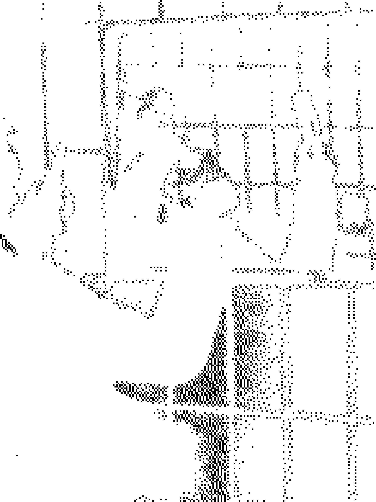
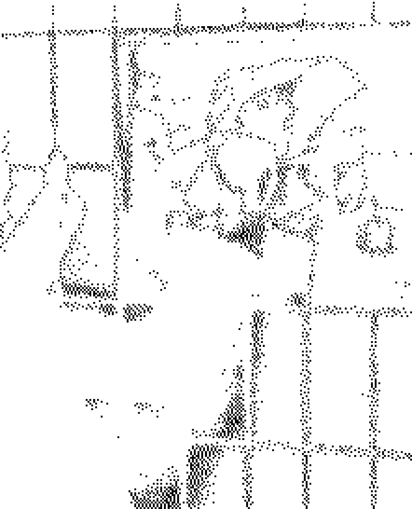
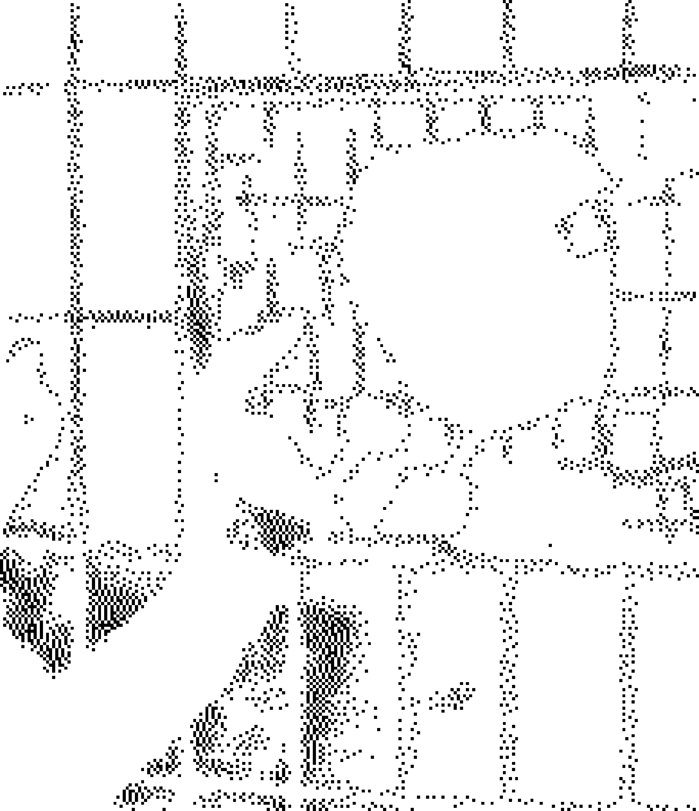

QUEERE GESCHICHTE IST TEIL DIESER STADT
Nicht alle Geschichten bleiben sichtbar. VESTIGE lädt dazu ein, den Spuren queeren Lebens in Hamburg zu folgen und den Geschichten dahinter zu begegnen.
vestige
Archiv queerer Geschichte in Hamburg



← WEITERE GESCHICHTEN ÖFFNEN